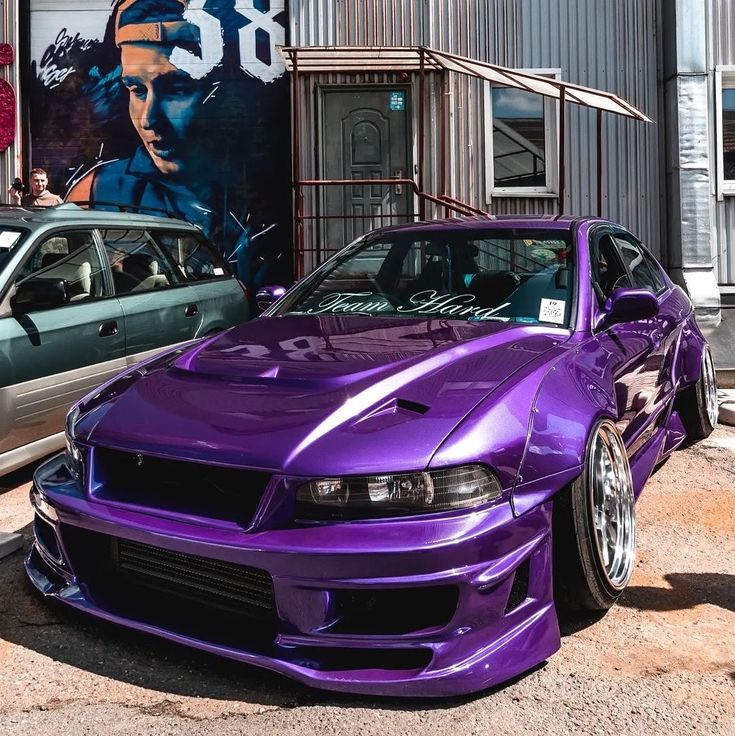
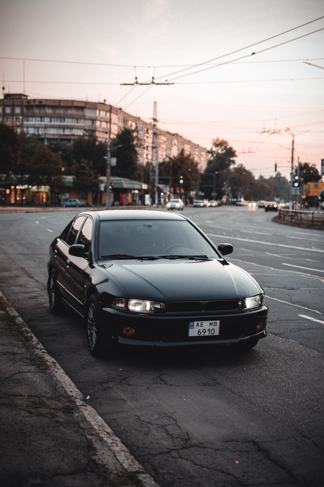
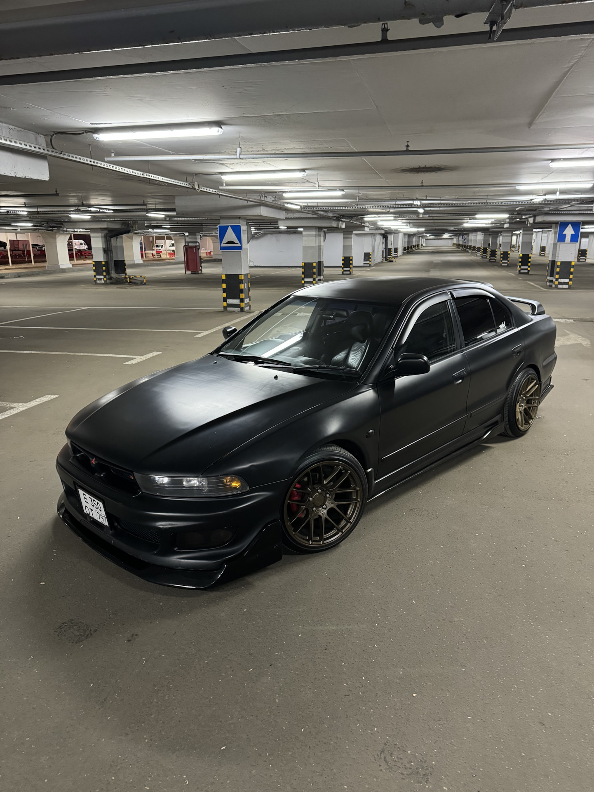

Философия: Осознанный уход в премиум
С дебютом восьмого поколения в 1996 году Mitsubishi совершила с моделью Galant осознанный и радикальный шаг. Это был окончательный разрыв со спортивным имиджем турбированных предшественников и четкий курс на завоевание места в сегменте солидных, комфортабельных бизнес-седанов. Разработанный в европейском дизайн-центре под руководством Эрика ван Виерса, автомобиль (кузова
E84 для седана,
E85 для универсала) перенимал черты континентальной элегантности. Его цель — конкурировать с
Toyota Camry и
Honda Accord на их же поле, предлагая максимальный комфорт, тишину и ощущение качества.
Дизайн и конструкция: Монолитность и акустический комфорт
- Исчезли угловатости 90-х. Дизайн стал "монолитным, плавным и цельным", с высокой линией окон и коротким задним свесом. Универсал, названный Legnum, получил особенно гармоничные и спортивные пропорции.
- Ключевым достижением стала "беспрецедентная для японского седана того времени шумо- и виброизоляция". Кузов отличался высокой жесткостью, а в отделке активно использовались демпфирующие материалы.
- Интерьер с качественным мягким пластиком, опциональной кожей, электрорегулировками и одной из первых в классе навигационных систем задавал тон «кабинетного» спокойствия и технологичности.
Позиционирование: Автомобиль для тех, кто ценит не скорость, а статус и уют
Galant VIII позиционировался как автомобиль для успешных профессионалов, ценящих неброскую элегантность, комфорт в долгих поездках и безупречную надежность. Это был выбор «белого воротничка», предпочитавшего кожаный салон и климат-контроль гоночному антикрылу.


Базовые двигатели: Акцент на плавность и технологии
Линейка силовых агрегатов была сформирована вокруг идеи комфорта и инноваций:
- 4G93 (1.8 л) и 4G63 (2.0 л): Классические надежные «четверки» для базовых комплектаций, обеспечивающие предсказуемую и экономичную езду.
- Технологичный, но проблемный авангард — 4G93 GDI (1.8 л): Mitsubishi активно продвигала революционную систему "непосредственного впрыска бензина (GDI)". Этот мотор отличался выдающейся экономичностью и моментом на низких оборотах, но со временем стал печально известен "высокой чувствительностью к качеству топлива, склонностью к нагарообразованию на клапанах и капризностью топливной системы", что требовало идеального обслуживания.
- Венец комфорта — V6 серии 6A1x и 6G7x: Компактные "2.0-литровый (6A12)" и "2.5-литровый (6A13)" V-образные шестицилиндровые двигатели. Их главным достоинством была "феноменальная плавность работы, тишина и эластичная тяга" на низких и средних оборотах, что идеально соответствовало имиджу солидного седана. Для рынков, где важны были не только плавность, но и уверенная тяга (например, Северная Америка), предлагался более крупный "3.0-литровый V6 серии 6G72" мощностью около 195 л.с. Этот мотор обеспечивал максимально расслабленную и динамичную езду в атмосферном сегменте модели.
- 4G69 (2.4 л MIVEC): Технологичный атмосферник с системой изменения фаз, предлагавший хороший баланс динамики и экономии.
Трансмиссия: 5-ступенчатая «механика» или 4-ступенчатый «автомат» "INVECS-II". Привод — передний или подключаемый полный (для повышения устойчивости).
Культовый флагман: Mitsubishi Legnum/Galant VR-4 и Super VR-4
Параллельно миру комфорта инженеры создали одну из самых безумных и культовых версий в истории марки, существовавшую как бы в иной реальности.
- Двигатель: "2.5-литровый битурбированный V6 6A13TT". Номинальная мощность — 280 л.с. (в соответствии с «джентльменским соглашением» японских производителей), но реальный крутящий момент и инженерный потенциал были огромны, открывая путь для серьёзного тюнинга.
- Трансмиссия: 5-ступенчатая «механика» или уникальный для своего класса 5-ступенчатый «автомат» с типтроником "INVECS-II Sport Mode".
- Привод и шасси: "Полный привод" с активным межосевым дифференциалом и продвинутой системой "AYC (Active Yaw Control)" на задней оси, позаимствованной у Lancer Evolution. Это делало тяжелый универсал невероятно азартным и цепким в поворотах, превращая его в настоящий «семейный» спортивный снаряд.
- Версия Super VR-4 (Type-S): Заводской «тюнинг» вершины эволюции модели. Усиленные турбины, доработанная подвеска, улучшенные тормоза и более острые настройки полного привода. Это был готовый «супер-универсал» для знатоков, выпущенный "микроскопическим тиражом — всего около 94 экземпляров", что делает его сегодня невероятно редким и желанным коллекционным объектом.
Феномен двойственного наследия
Galant/Legnum VIII оставил после себя два абсолютно разных образа.
-
Как солидный седан/универсал: Он запомнился как один из самых комфортабельных и тихих японских автомобилей своего поколения. Его наследие — это эталон размеренного, качественного и практичного владения для несуетливого водителя.
-
Как Legnum VR-4: Он стал культовым «спящим» суперкаром, иконой для энтузиастов, ценящих уникальное сочетание сумасшедшей динамики, полного привода и практичности универсала. Это редкий пример, когда в одном поколении уживались «семейный корабль» и «заряженное» оружие.
Практика владения сегодня: Два сценария
Сценарий 1: Атмосферный Galant/Legnum как разумный выбор
Плюсы:
- Невероятный комфорт и тишина в салоне даже по современным меркам.
- Плавная, шелковая работа двигателей V6.
- Огромное пространство, особенно в кузове универсал.
- Высокая надежность атмосферных моторов и классического автомата INVECS-II.
- Очень привлекательная цена на вторичном рынке.
Минусы: - Скучная, расслабленная динамика.
- Двигатель 4G69 (2.4 MIVEC) склонен к повышенному расходу масла и проблемам с механизмом MIVEC.
- Возрастная электроника (блоки климат-контроля, управления двигателем).
- Коррозия порогов и арок.
Сценарий 2: Legnum/Galant VR-4 как проект для фанатика
Плюсы (теоретические):
- Культовый статус и образ «короля-невидимки».
- Феноменальная для универсала динамика и управляемость.
- Огромный тюнинговый потенциал двигателя 6A13TT.
Суровые реалии: - Подавляющее большинство экземпляров убиты непрофессиональным тюнингом и гонками.
- Запредельная стоимость ремонта турбодвигателя, турбин, систем AYC и полного привода.
- Колоссальный расход топлива и высокие эксплуатационные расходы.
- Крайняя сложность поиска оригинальных запчастей для уникальных узлов.
Итог и культурный код
Mitsubishi Galant восьмого поколения подвел итог целой эпохи модели, раздвоившись между мирами. С одной стороны, он стал образцом того, как японский автопром умел создавать безупречно комфортабельные, качественные и неброские автомобили для взрослой аудитории. С другой — он породил скрытую легенду Legnum VR-4, доказав, что под маской респектабельного универсала может биться безумное гоночное сердце.
Сегодня обычный Galant/Legnum — это идеальный кандидат на роль недорогого, комфортного и вместительного «дальнобоя», особенно в версии с мотором V6. VR-4 же — это уже удел коллекционеров и фанатов с большим бюджетом и готовностью к сложному уходу, желающих обладать одним из самых неординарных и харизматичных японских автомобилей на стыке тысячелетий. Это поколение напоминает, что истинная роскошь и истинная скорость часто бывают очень тихими.

 89081317488
89081317488

 8(908)131-74-88
8(908)131-74-88.svg) fayther2@yandex.ru
fayther2@yandex.ru